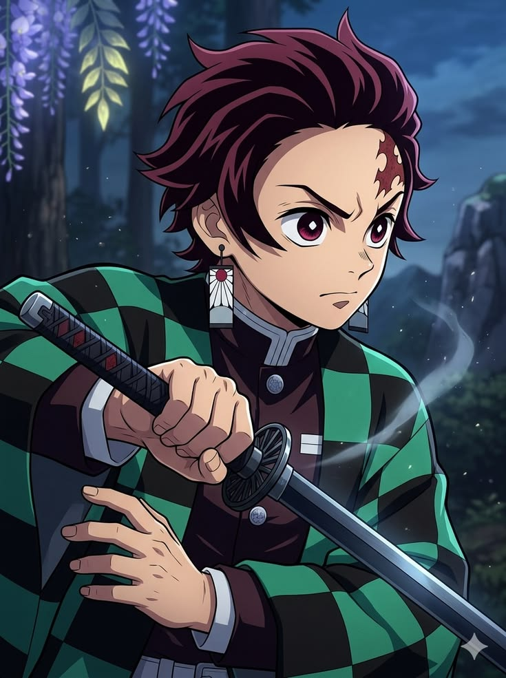
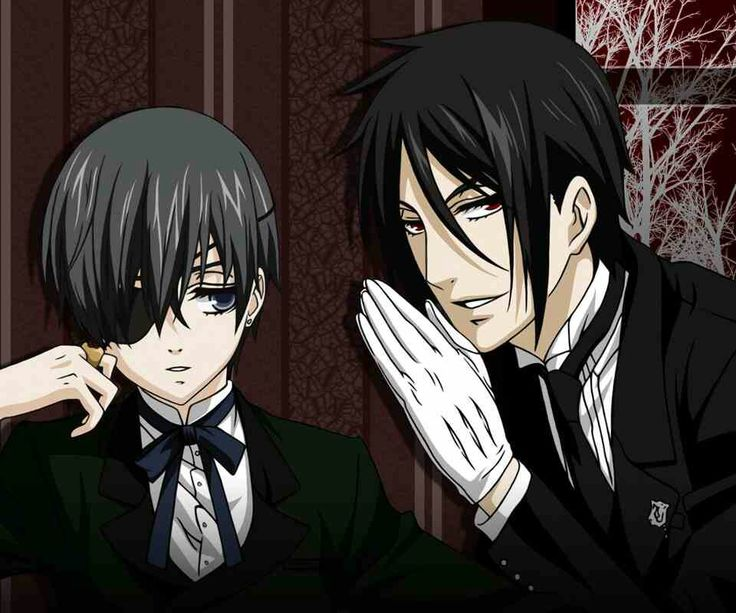
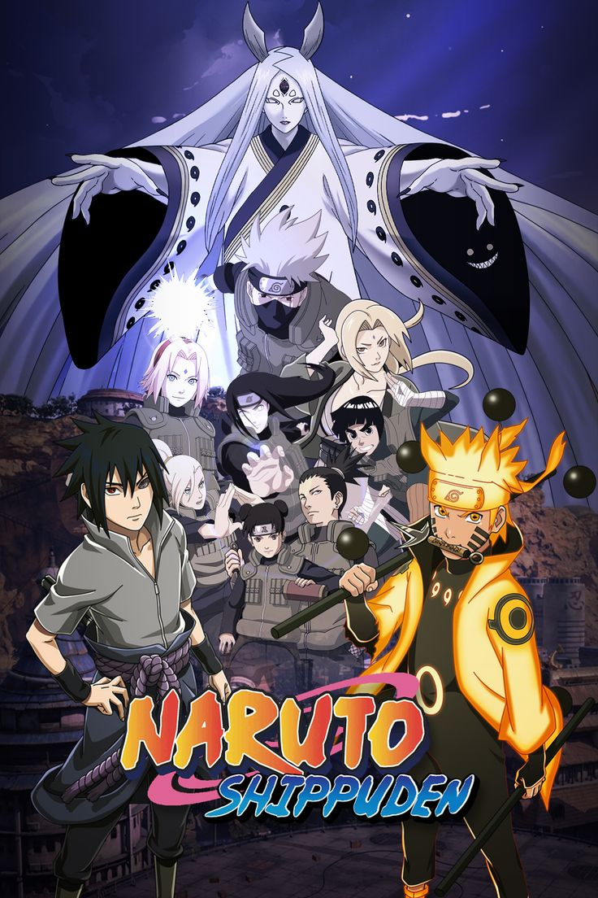
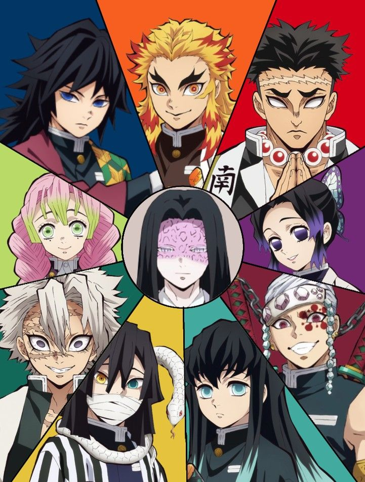
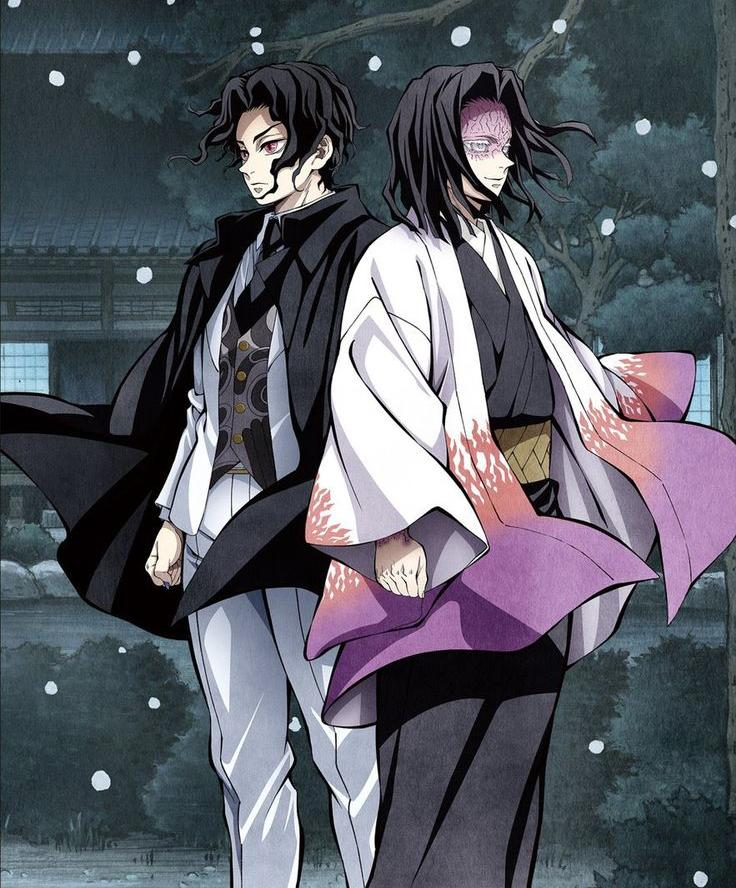
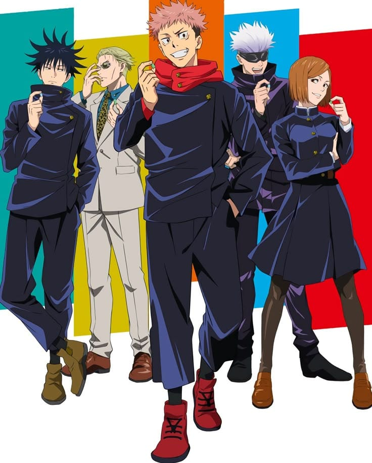
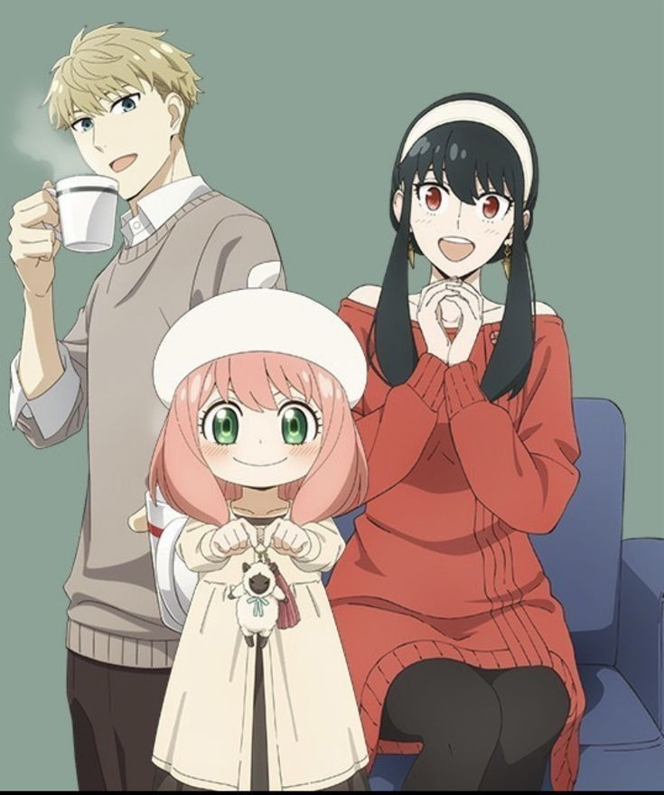
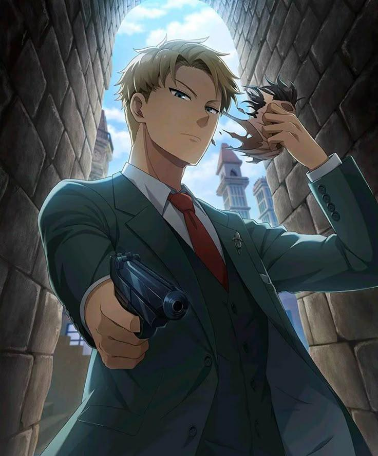
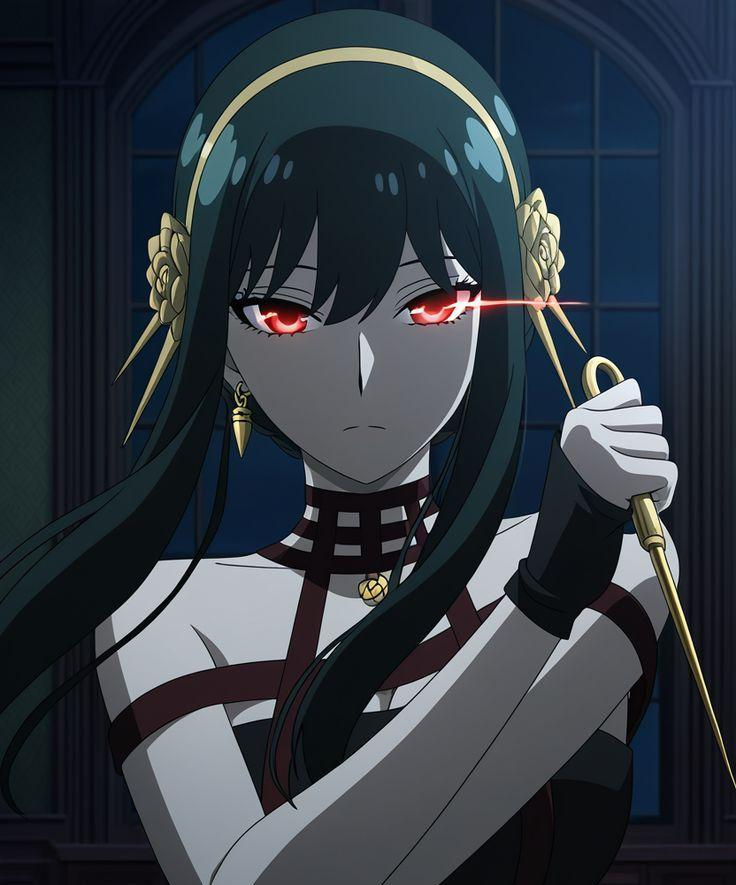

Naruto the Movie & Naruto Shippuden

Anime ninja legendaris tentang perjuangan Uzumaki Naruto meraih mimpinya menjadi Hokage sambil melindungi teman-temannya.
Website sederhana berisi informasi dan rekomendasi anime
Anime ninja legendaris tentang perjuangan Uzumaki Naruto meraih mimpinya menjadi Hokage sambil melindungi teman-temannya.

Anime action fantasi tentang Kamado Tanjiro yang berjuang melawan iblis demi menyelamatkan adiknya.

Anime supernatural penuh pertarungan seru yang mengikuti perjalanan Itadori Yuji menghadapi kutukan berbahaya.

Anime misteri berlatar Inggris klasik yang mengisahkan Ciel Phantomhive dan pelayannya, Sebastian dalam menangani kasus gelap.

Anime aksi, comedy, dan slice of life tentang keluarga palsu yang menyimpan rahasia besar di balik kehidupan sehari-hari mereka.













